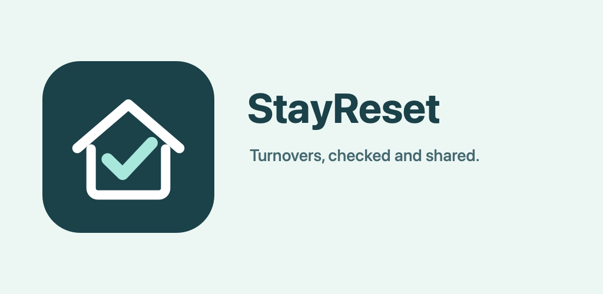

A clearer handover after every turnover.
Create a reusable checklist for each rental property. Tick tasks, add completion photos and notes, then share a PDF report.
For independent hosts and cleaners who want a simple record without another team scheduling system.

What it does
Repeat the right steps
Set up a property checklist once and copy it into each new turnover.
Record what happened
Check steps, attach photos and note damage or missing supplies.
Send a handover
Review and share a PDF showing completed and unchecked steps.
Frequently asked questions
Does it need an account?
No. The first version stores your checklist, notes and chosen photos on your device.
Does it sync bookings or assign cleaners?
No. StayReset focuses on the checklist and handover report.
Where can I download it?
Store links will be added after review and publication. The app is currently a release candidate.